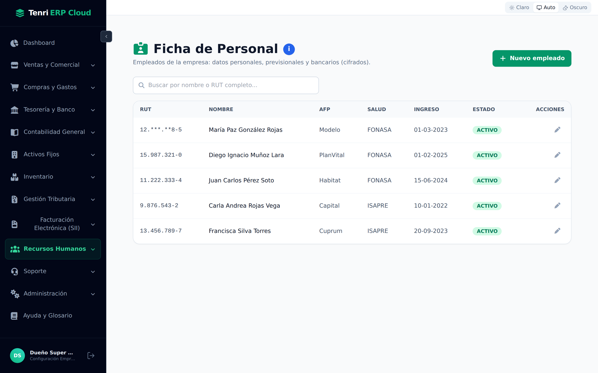
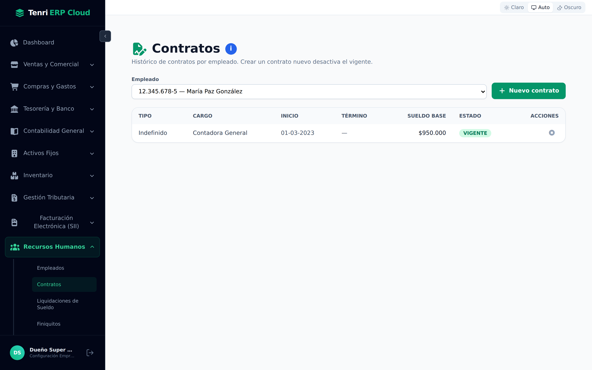
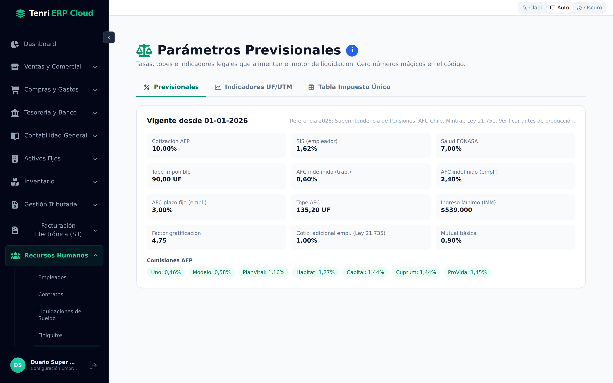
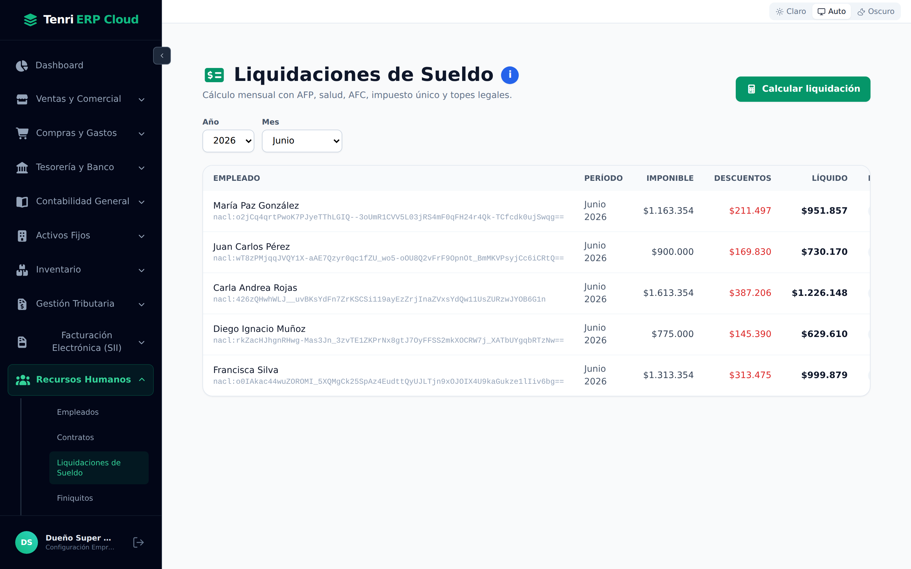
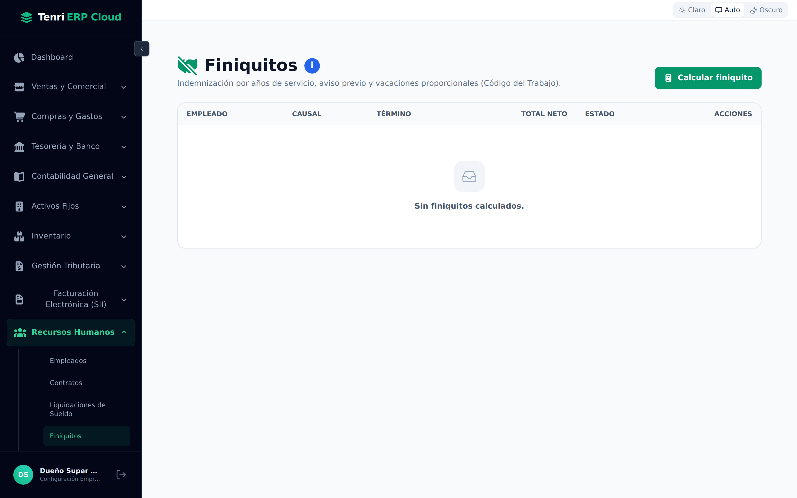
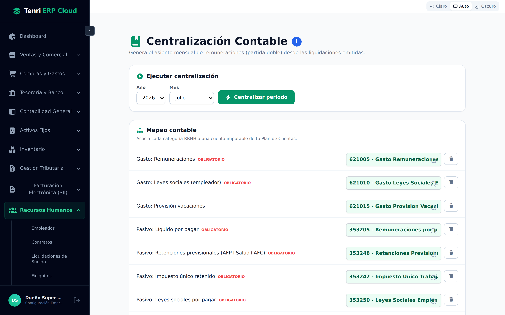
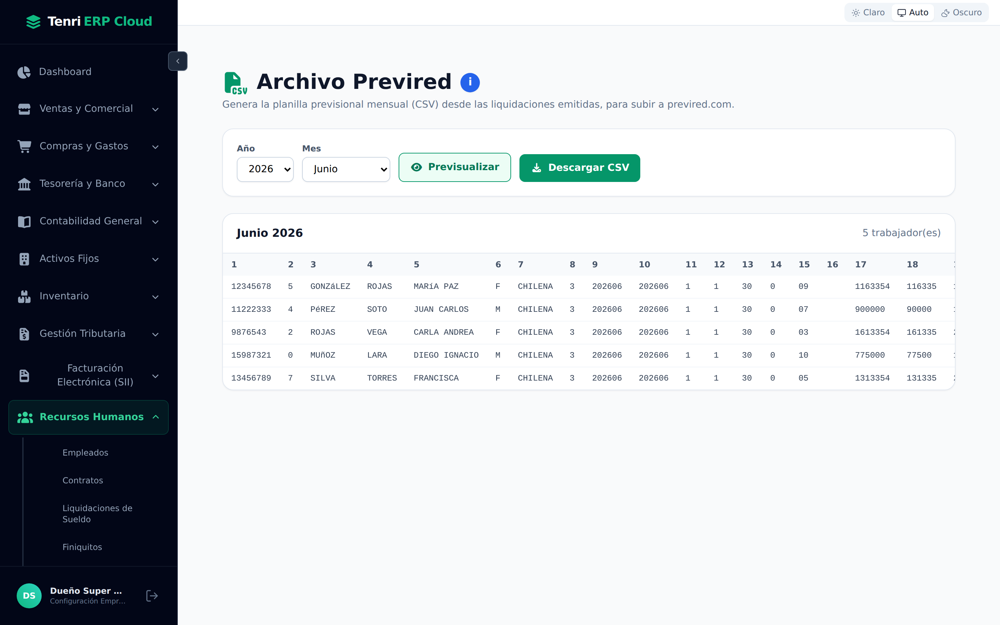
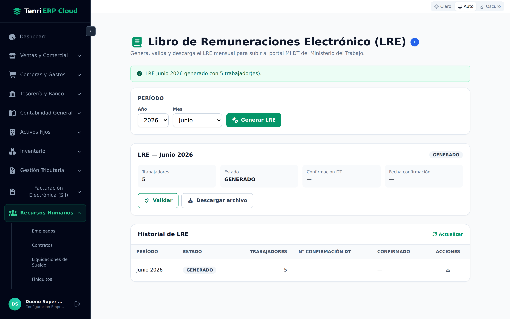
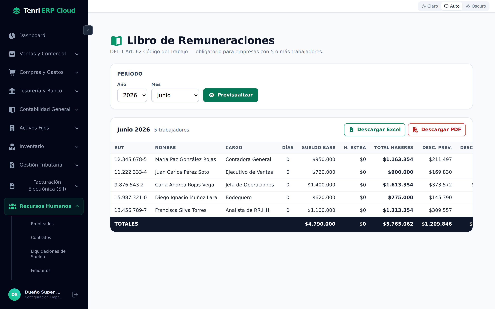
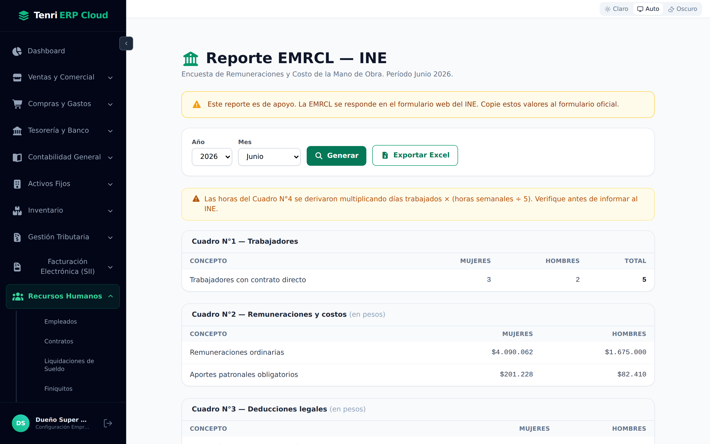

Del contrato al pago: administre a su personal, calcule las liquidaciones de sueldo con la normativa chilena y genere Previred, LRE y los libros obligatorios, todo conectado a la contabilidad.

Diez pantallas que cubren el ciclo completo de remuneraciones.
Recursos Humanos gestiona a las personas y su remuneración de punta a punta. Sus pantallas siguen el flujo natural del trabajo:
| Bloque | Pantallas |
|---|---|
| Personal | Empleados (Ficha de Personal), Contratos. |
| Configuración | Parámetros Previsionales, Centralización Contable. |
| Cálculo | Liquidaciones de Sueldo, Finiquitos. |
| Declaraciones y libros | Archivo Previred, LRE, EMRCL, Libro de Remuneraciones. |
El registro maestro de cada trabajador.
Con + Nuevo empleado crea una ficha. Cada trabajador reúne sus datos personales, previsionales y bancarios, que luego alimentan el cálculo de sueldos:
| Grupo de datos | Contenido |
|---|---|
| Personales | RUT, nombres y apellidos, fecha de nacimiento, estado civil, dirección y contacto. |
| Previsionales | AFP y sistema de salud (FONASA o ISAPRE, con su plan en UF). |
| Bancarios | Banco, tipo y número de cuenta para el pago del sueldo (cifrados). |
| Estado | Si el empleado está Activo en la empresa. |
La relación laboral de cada empleado.
Cada trabajador tiene un contrato vigente que define su remuneración y condiciones. Seleccione un empleado para ver su historial de contratos; con + Nuevo contrato registra uno nuevo (lo que desactiva el anterior). El contrato define:
| Campo | Descripción |
|---|---|
| Tipo | Indefinido, plazo fijo u obra/faena. |
| Cargo y departamento | La función y el área del trabajador. |
| Sueldo base | La remuneración fija mensual, base del cálculo. |
| Jornada | Horas semanales y tipo de jornada. |

El motor legal que alimenta todo el cálculo.
Antes de liquidar sueldos, el sistema necesita las tasas, topes e indicadores legales vigentes. Esta pantalla los centraliza, evitando “números mágicos” en el cálculo. Se organiza en tres pestañas:

El cálculo mensual del sueldo líquido, automático.
Elija el año y el mes y presione Calcular liquidación. Para cada empleado con contrato vigente, el sistema calcula automáticamente, según los parámetros legales:
| Concepto | Qué incluye |
|---|---|
| Haberes imponibles | Sueldo base, gratificación y otros haberes afectos. |
| Descuentos | AFP, salud, seguro de cesantía (AFC) e impuesto único. |
| Líquido a pagar | El monto final que recibe el trabajador. |

Cada liquidación tiene un ciclo de estados: BORRADOR → EMITIDA → PAGADA. Solo las liquidaciones emitidas alimentan Previred, el LRE y los libros.
El cálculo del término de la relación laboral.
Al terminar un contrato, la pantalla de Finiquitos calcula la indemnización por años de servicio, el aviso previo y las vacaciones proporcionales según el Código del Trabajo y la causal de término. Con Calcular finiquito genera el documento con su total neto.

Del sueldo a la contabilidad, en un asiento.
La Centralización Contable convierte las liquidaciones emitidas del mes en el asiento de remuneraciones (partida doble). El Mapeo contable asocia cada categoría de RR.HH. a una cuenta imputable de su Plan de Cuentas:
| Categoría | Ejemplo de cuenta |
|---|---|
| Gasto: Remuneraciones | 621005 · Gasto Remuneraciones. |
| Gasto: Leyes sociales (empleador) | 621010 · Gasto Leyes Sociales. |
| Pasivo: Líquido por pagar | 353205 · Remuneraciones por pagar. |
| Pasivo: Retenciones previsionales | 353248 · Retenciones Previsionales. |
Elija el período y presione Centralizar período para generar el asiento en Contabilidad General.

A partir de las liquidaciones emitidas, el módulo genera automáticamente los archivos y libros que exige la normativa: la planilla Previred, el Libro de Remuneraciones Electrónico (LRE), la encuesta EMRCL del INE y el Libro de Remuneraciones.
La planilla mensual de cotizaciones previsionales.
Genera la planilla Previred (CSV) del mes a partir de las liquidaciones emitidas, lista para subir a previred.com y pagar las cotizaciones. Elija el período, use Previsualizar para revisar los datos de los trabajadores y Descargar CSV para obtener el archivo.

El libro obligatorio de la Dirección del Trabajo.
El LRE es el libro que se sube al portal Mi DT de la Dirección del Trabajo. Con Generar LRE se arma el libro del período; luego puede Validar su formato y Descargar archivo. El Historial de LRE registra cada libro generado y su estado de confirmación.

El libro auxiliar y la encuesta del INE.
El Libro de Remuneraciones (DFL‑1 Art. 62 del Código del Trabajo, obligatorio desde 5 trabajadores) resume, por empleado, sueldo base, haberes, descuentos previsionales y líquido, con sus totales. Se puede descargar en Excel o PDF.

El Reporte EMRCL arma la Encuesta de Remuneraciones y Costo de la Mano de Obra del INE, con los cuadros de trabajadores, remuneraciones y deducciones. Es un reporte de apoyo: los valores se copian al formulario web oficial del INE.

Recursos Humanos administra al personal, calcula las remuneraciones con la normativa chilena y genera las declaraciones y libros obligatorios, todo conectado a la contabilidad.
Fichas de empleados y contratos como base de todo el módulo.
Liquidaciones y finiquitos calculados con AFP, salud, AFC e impuesto.
Previred, LRE, EMRCL, Libro de Remuneraciones y centralización contable.